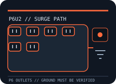

[ SURGE PROTECTIVE DEVICE // STATIC REFERENCE ]
APC SurgeArrest 6-Outlet Surge Protector with USB P6U2
Six grounded NEMA 5-15R AC outlets plus two USB charging ports. 1,080 J, as stated in APC’s model-specific product listing. 6 ft (1.83 m), manufacturer-listed. Exact revisions and regional suffixes matter; verify the nameplate and current manufacturer instructions before use.

SAFETY SCOPE: A surge strip cannot guarantee protection from every event, correct defective grounding, or supply battery runtime. A light is not a ground tester. Follow the current model-specific manual, inspect the actual nameplate, and use qualified electrical help where required.
Model specifications and topology
| Manufacturer / exact model | APC P6U2 — model-specific record; confirm the label, revision and region on the actual product. |
|---|---|
| Device class / function | Cord-connected point-of-use surge protective power strip. USB charging; no battery or outage runtime. No voltage-clamping figure is asserted in this record. It is not a UPS and does not provide outage runtime. |
| Electrical rating | 120 V AC, 15 A maximum; use on a properly grounded North American branch circuit and stay within the nameplate rating. |
| Surge-energy rating | 1,080 J, as stated in APC’s model-specific product listing. Joules describe a published surge rating, not continuous load, device lifetime, or a guarantee against all transients. |
| Outlets / cord | Six grounded NEMA 5-15R AC outlets plus two USB charging ports. 6 ft (1.83 m), manufacturer-listed. |
| Clamping / let-through voltage | No clamping or let-through voltage claim is made here. Do not derive one from a joule rating; consult the exact model’s current certification record and manual if this value is needed. |
| Indicators / monitoring | APC identifies a protection-working indicator; check the exact manual for its interpretation. |
| Safety certification | Use only a unit bearing its required UL/cUL approval marks. The cited model documentation and nameplate control; do not assume an approval from a similar SurgeArrest model. |
| Warranty / connected equipment | APC lists a limited lifetime product warranty and a connected-equipment protection policy (up to US$50,000 in the cited U.S. listing); limits, exclusions and regional terms apply. |
| Compatibility | Use only on a compatible grounded North American circuit at the exact nameplate rating. Match plugs and voltage; do not exceed 15 A where that rating is stated. Signal-line protection, if present, applies only to supported cables connected exactly as documented. |
Compatibility and application
Six grounded AC outlets, dual USB charging and APC-listed 1,080 J surge energy; the product is a corded strip, not a UPS. Confirm input voltage, connector, available branch-circuit capacity, USB limits and the manufacturer’s listed use from the cited manual. A joule rating does not raise the permissible load and does not define clamping behavior.
Use only in the environment stated on the label and manual. Avoid daisy-chaining, ungrounded/damaged/wet outlets, overloaded extension arrangements, and unsupported signal-line connections. Do not open the enclosure or defeat the grounding pin.
Protection, ground and lifecycle caveats
- Grounding and protection indicators report the device’s monitored condition only; they do not prove the building wiring is properly grounded or that all surge paths are protected.
- Retire a damaged product or one whose protection-failure status requires replacement under its manual. A resettable breaker does not replace branch-circuit protection or authorize overload.
- Transient protection cannot guarantee survival from lightning, wiring faults, sustained overvoltage, or events entering through an unprotected data/signal path. Warranty and connected-equipment coverage have exclusions and claim conditions.
Manufacturer sources
- APC — P6U2 product listingManufacturer model/product source for the named SKU and stated feature data; revisions and regions can differ.
- Schneider Electric — APC P6U2 user manualManufacturer manual or product-documentation source. Use the exact unit label and the current revision before installation.